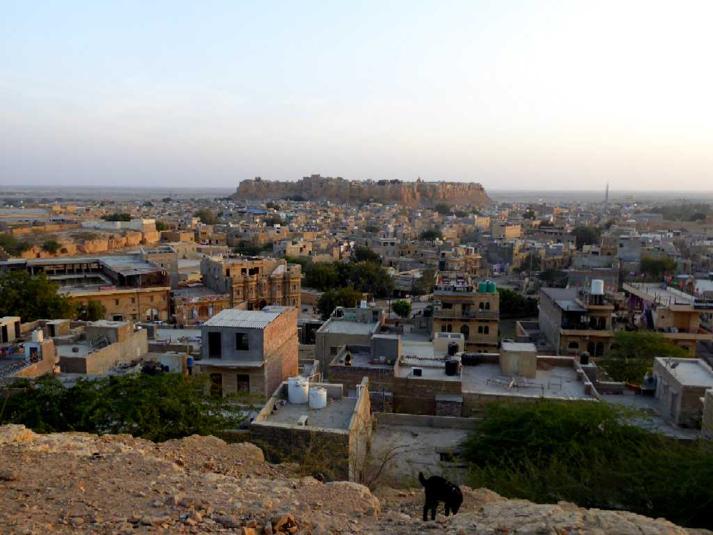
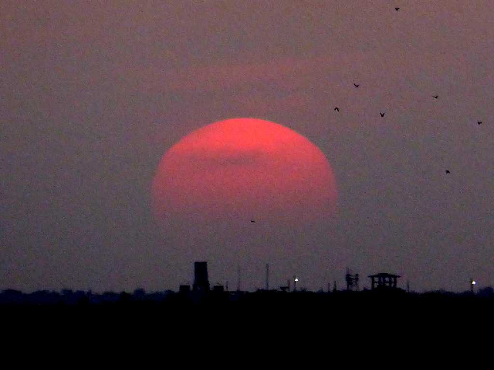
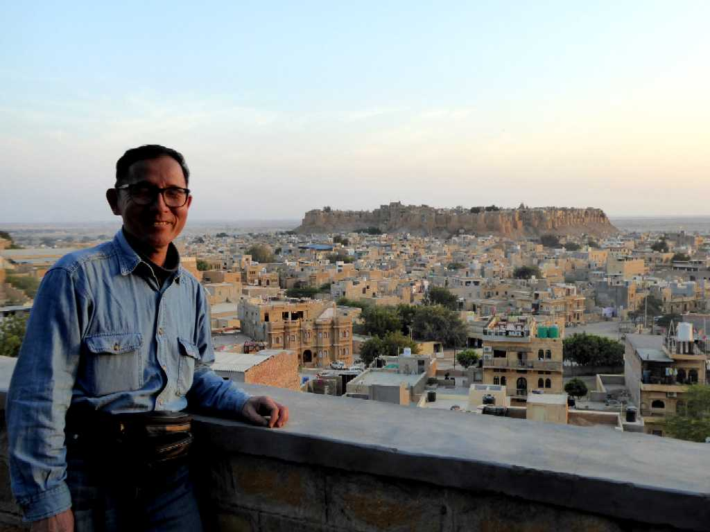
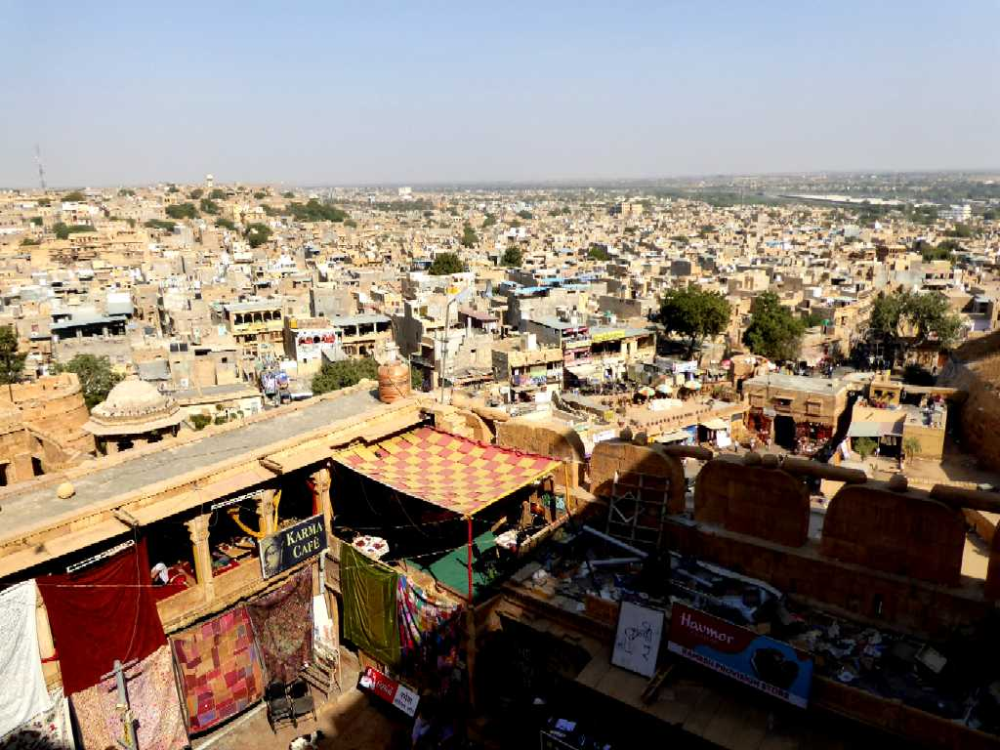

Golden City Jaisalmer
大インド砂漠と云われるタール砂漠の中心にある黄砂の砂岩で創られた夕日で黄金に輝くオアシス都市ジャイサルメール

January 29 2018 18:23 Sunset Jaisalmer
黄金のオアシス都市に落ちる夕日も美しい

January 29 2018 Jaisalmer

Golden City from Fort
城下町に人口の４分の１ほどが暮らしている生きた城塞都市